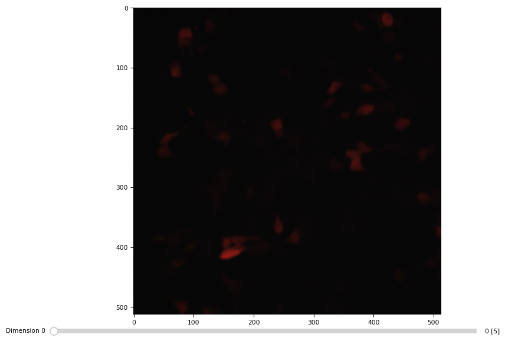

Reading image data in python
import numpy from scipy import ndimage import matplotlib.pyplot as plt import matplotlib.image import matplotlib
1 Limitation of scipy.ndimage and matplotlib.image
Using imread() from either scipy.ndimage or maptplotlib.image results in importing only the first image of a tif (multichannel) time sequence.
1.1 imageio.imread reads 3D properly
As ndimage.imread does not exist anymore.
import imageio im = imageio.v2.imread("/home/dati/liaisan/data/160304/HEK293_ClopHensor-pBJ1_MatraS_attempt/10x_200_200_200/c1.tif") print("ndim = ", im.ndim, "\nshape = ", im.shape, '\nmax = ', im.max()) plt.imshow(im[0])
1.2 matplotlib
im = matplotlib.image.imread("/home/dati/liaisan/data/160304/HEK293_ClopHensor-pBJ1_MatraS_attempt/10x_200_200_200/c1.tif") print("ndim = ", im.ndim, "\nshape = ", im.shape, '\nmax = ', im.max()) plt.imshow(im)
ndim = 2 shape = (512, 512) max = 4886

2 scikit-image
from skimage import io im = io.imread("/home/dati/liaisan/data/160304/HEK293_ClopHensor-pBJ1_MatraS_attempt/10x_200_200_200/c1.tif") print("ndim = ", im.ndim, "\nshape = ", im.shape, '\nmax = ', im.max()) plt.imshow(im[0,:,:,0])
ndim = 4 shape = (5, 512, 512, 3) max = 4886

3 Other two options
3.1 tifffile
import tifffile im = tifffile.imread("/home/dati/liaisan/data/160304/HEK293_ClopHensor-pBJ1_MatraS_attempt/10x_200_200_200/c1.tif") print("ndim = ", im.ndim, "\nshape = ", im.shape, '\nmax = ', im.max()) tifffile.imshow(im)
ndim = 4 shape = (5, 3, 512, 512) max = 4886

3.1.1 Tiles
im = tifffile.imread("/home/dati/marta/efrem/20160620/efrem/gap20/t2_1.tif") im[0].TiffPage()
---------------------------------------------------------------------------
FileNotFoundError Traceback (most recent call last)
Cell In [94], line 1
----> 1 im = tifffile.imread("/home/dati/marta/efrem/20160620/efrem/gap20/t2_1.tif")
2 im[0].TiffPage()
File ~/.pyenv/versions/3.11.0/envs/py311/lib/python3.11/site-packages/tifffile/tifffile.py:1008, in imread(files, aszarr, key, series, level, squeeze, maxworkers, mode, name, offset, size, pattern, axesorder, categories, imread, sort, container, axestiled, ioworkers, chunkmode, fillvalue, zattrs, multiscales, omexml, out, _multifile, _useframes, **kwargs)
1003 files = files[0]
1005 if isinstance(files, str) or not isinstance(
1006 files, collections.abc.Sequence
1007 ):
-> 1008 with TiffFile(
1009 files,
1010 mode=mode,
1011 name=name,
1012 offset=offset,
1013 size=size,
1014 omexml=omexml,
1015 _multifile=_multifile,
1016 _useframes=_useframes,
1017 **is_flags,
1018 ) as tif:
1019 if aszarr:
1020 assert key is None or isinstance(key, int)
File ~/.pyenv/versions/3.11.0/envs/py311/lib/python3.11/site-packages/tifffile/tifffile.py:3832, in TiffFile.__init__(self, file, mode, name, offset, size, omexml, _multifile, _useframes, _parent, **is_flags)
3829 if mode not in (None, 'r', 'r+', 'rb', 'r+b'):
3830 raise ValueError(f'invalid mode {mode!r}')
-> 3832 fh = FileHandle(file, mode=mode, name=name, offset=offset, size=size)
3833 self._fh = fh
3834 self._multifile = True if _multifile is None else bool(_multifile)
File ~/.pyenv/versions/3.11.0/envs/py311/lib/python3.11/site-packages/tifffile/tifffile.py:13088, in FileHandle.__init__(self, file, mode, name, offset, size)
13086 self._close = True
13087 self._lock = NullContext()
> 13088 self.open()
13089 assert self._fh is not None
File ~/.pyenv/versions/3.11.0/envs/py311/lib/python3.11/site-packages/tifffile/tifffile.py:13103, in FileHandle.open(self)
13101 self._file = os.path.realpath(self._file)
13102 self._dir, self._name = os.path.split(self._file)
> 13103 self._fh = open(self._file, self._mode) # type: ignore
13104 self._close = True
13105 if self._offset < 0:
FileNotFoundError: [Errno 2] No such file or directory: '/home/dati/marta/efrem/20160620/efrem/gap20/t2_1.tif'
with tifffile.TiffFile('/home/dati/marta/efrem/20160620/efrem/gap20/t2_1.tif') as tif:
print(tif)
images = tif.asarray()
for page in tif:
print(page.axes)
# tifffile.tifffile.TiffPage(page)
for tag in page.tags.values():
t = tag.name, tag.value
image = page.asarray()
print(image)
TIFF file: SHA256E-s43989163--ea6be4f70a5276fb918715b492ad544da90a1a917cf8931e44306d60f070eaa2.tif, 42 MiB, little endian, 81 pages YX YX YX YX YX YX YX YX YX YX YX YX YX YX YX YX YX YX YX YX YX YX YX YX YX YX YX YX YX YX YX YX YX YX YX YX YX YX YX YX YX YX YX YX YX YX YX YX YX YX YX YX YX YX YX YX YX YX YX YX YX YX YX YX YX YX YX YX YX YX YX YX YX YX YX YX YX YX YX YX [[1390 1401 1508 ..., 1109 1267 1087] [1565 1718 1910 ..., 1793 1618 1753] [1790 1808 2019 ..., 1950 1968 1892] ..., [1626 1740 1773 ..., 1831 1776 1848] [1644 1805 1743 ..., 1701 1884 1711] [1587 1655 1831 ..., 1786 1968 1886]]
3.2 bioformat
import javabridge import bioformats javabridge.start_vm(class_path=bioformats.JARS) path = "/home/dati/GBM_persson/data/15.02.05_cal-GBM5-pBJclop/ph633/1_20_40.tif" imagedata = bioformats.ImageReader(path) image_desc = bioformats.get_omexml_metadata(path) image_desc = bioformats.OMEXML(image_desc) num_images = image_desc.get_image_count() javabridge.kill_vm()
---------------------------------------------------------------------------
ModuleNotFoundError Traceback (most recent call last)
Cell In [95], line 1
----> 1 import javabridge
2 import bioformats
3 javabridge.start_vm(class_path=bioformats.JARS)
ModuleNotFoundError: No module named 'javabridge'
4 Conclusions
Scikit-image is the winner (over scipy.ndimage and matplotlib.image) when importing microscopy data tiff stacks (multiplanes, multichannels, multitime points).
skimage conventions are here.